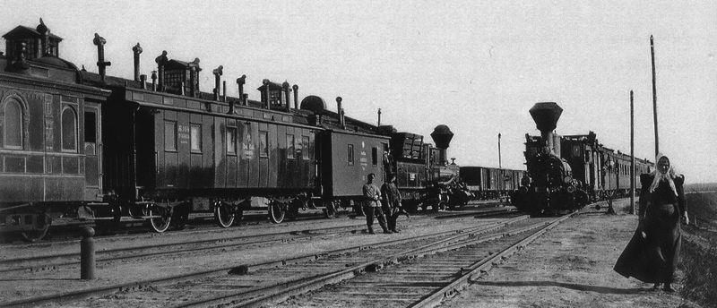

|  |
 |
 |
 |
В 1716 году подполковником Иваном Дмитриевичем Бухгольцем на месте впадения реки Оми в Иртыш была основана Омская крепость, положившая начало развитию одного из старейших городов Сибири – Омску. Во второй половине XVIII века она становится крупнейшим сооружением на востоке страны.
26 января (7 февраля) 1822 года Александр I подписал Именной указ «О разделении сибирских губерний на Западное и Восточное управления». Инициатором этой реформы стал стоявший во главе сибирских территорий видный государственный деятель М.М. Сперанский.
В 1838 году Омская область была упразднена. Функции по управлению степными территориями переданы Пограничному управлению сибирскими киргизами, переименованному в 1856 году в Область сибирских киргизов, а затем в 1868 году в Акмолинскую область. Несмотря на все реорганизации и переименования местом пребывания этого управленческого органа оставался город Омск. Здесь же с 1839 года до революции 1917 года базировались высшие административно-управленческие структуры региона – Главное управление Западной Сибири и канцелярия Степного генерал-губернатора.
В 1877 году в городе был открыт Западно-Сибирский отдел Императорского Русского географического общества, сыгравший важную роль в изучении края. В XIX веке в Омск ссылали декабристов, петрашевцев, народников, других представителей революционных и антиправительственных движений. Каторгу в омском остроге отбывал великий русский писатель Ф.М. Достоевский.
К началу Первой мировой войны Омск стал самым многочисленным городом в Сибири и занимал одно из первых мест по вывозу в европейскую Россию и за рубеж сельскохозяйственной продукции: зерна, кожи, шерсти, сливочного масла и других продуктов животноводства.
До Революции в городе успешно работали предприятия, открытые иностранцами, в том числе отделения ряда американских фирм по производству сельхозтехники. Видным представителем крупной буржуазии был датчанин С.Х. Рандруп. Разбогатев в 90-е годы XIX века на торговле маслом, в 1903 году он открыл в Омске большой завод по производству сельскохозяйственных орудий и машин.
Летом 1911 года в городе произошло значительное событие – была проведена Первая Западно-Сибирская сельскохозяйственная, лесная и торгово-промышленная выставка.
В конце декабря 1917 года в Омске установилась советская власть, а в начале 1918 года Акмолинская область была переименована в Омскую, в состав которой вошли Тарский и Тюкалинский уезды.
7 июня 1918 года в результате белочешского мятежа советская власть была свергнута. На период власти белогвардейцев прежнее административное деление было возвращено.
23 июля 1918 года Омск официально объявлен административным центром антибольшевистской России и стал главным местом расположения штабных структур белой Сибирской армии. Здесь в этот период вели работу правительства, претендовавшие на общегосударственный масштаб: с 30 июня 1918 года – Временное Сибирское правительство, с 4 ноября 1918 года – Директория, с 18 ноября 1918 года – Российское правительство адмирала А.В. Колчака. В Омске в те годы хранился золотой запас России, работали представительства ряда иностранных государств.
14 ноября 1919 года части 5-й Красной Армии Восточного фронта под командованием М.Н. Тухачевского заняли Омск.
7 декабря 1934 года Омская область была образована вновь. Теперь она охватывала пространство от Казахстана до Карского моря. Современные очертания она обрела в 1944 году, когда из части ее территории была выделена Тюменская область.
Важным этапом в развитии области стали годы Великой Отечественной войны. В первые ее месяцы из европейской части страны ы Омск были эвакуированы свыше 100 промышленных предприятий. Именно они стали основой для создания в регионе крупного машиностроительного комплекса. С них началось развитие таких гигантов индустрии, как Моторостроительный завод имени П.И. Баранова, завод «Электроточприбор», завод имени Н.Г. Козицкого, производственное объединение «Полет», Омский завод транспортного машиностроения и других.
В послевоенное время Омская область активно включилась в процесс освоения целинных земель. В 1954-1956 годах на юге региона были организованы мощные высокорентабельные зерновые и мясомолочные хозяйства, появилась развитая сеть сельских поселений. В 1957 году за освоение целинных и залежных земель область удостоена ордена В.И. Ленина.
В 1971 году Указом Президиума Верховного Совета СССР город Омск награждён орденом Трудового Красного Знамени за успехи, достигнутые в развитии нефтехимии и машиностроения.
Экономика региона сегодня держится на крепком сельском хозяйстве, развитой промышленности и серьезном научном потенциале. В Омской области выпускают нефтепродукты, технический углерод, полипропилен, каучуки, автошины, ракетно-космическую и криогенную технику, авиационные двигатели, комплексы связи и приборы автоматизации процессов, аппаратуру для энергетических систем, транспортные средства, продукцию деревообработки, одежду, обувь и многое другое. По объему произведенной сельхозпродукции Омское Прииртышье стабильно занимает лидирующие позиции в Сибири, полностью обеспечивая себя всеми необходимыми продуктами питания и поставляя их в другие регионы России и за рубеж.